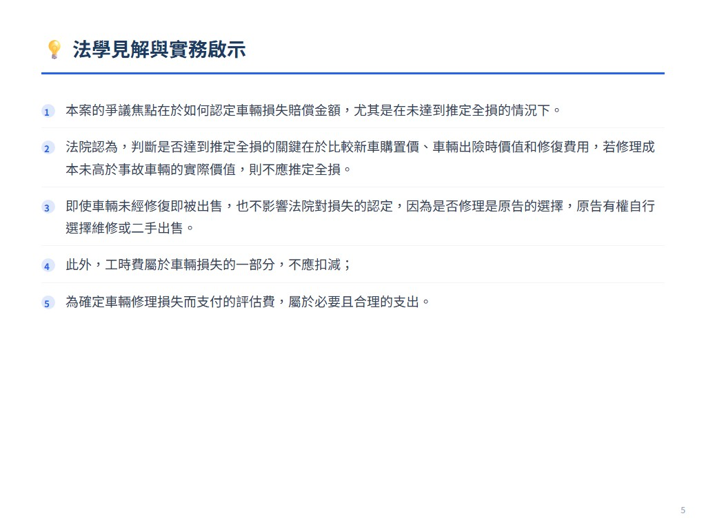
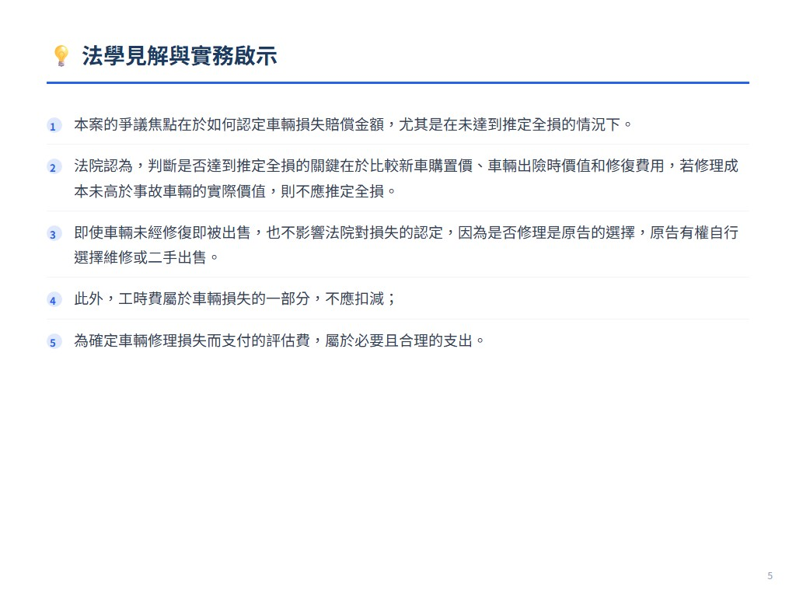

摘要
本案為一起財產保險合同糾紛，原告劉招林因車輛發生交通事故向保險公司索賠，保險公司認為車輛尚有殘值且應按實際修理費用賠償。法院最終判決保險公司應賠償原告汽車損失險保險金，駁回原告其他訴訟請求，二審維持原判。
爭議焦點與裁判要旨
- 未達推定全損，按核定修理費用計賠。
- 車輛未經修復即出售不影響損失認定。
- 工時費屬於車輛損失，不應扣減。
- 評估費為確定車損的必要支出。
- 出售價格不應在車損價值中扣減。
法學見解
本案的爭議焦點在於如何認定車輛損失賠償金額，尤其是在未達到推定全損的情況下。法院認為，判斷是否達到推定全損的關鍵在於比較新車購置價、車輛出險時價值和修復費用，若修理成本未高於事故車輛的實際價值，則不應推定全損。即使車輛未經修復即被出售，也不影響法院對損失的認定，因為是否修理是原告的選擇，原告有權自行選擇維修或二手出售。此外，工時費屬於車輛損失的一部分，不應扣減；為確定車輛修理損失而支付的評估費，屬於必要且合理的支出。法院亦指出，原告出售車輛的價格可視為填補部分損失，不應在車損價值中扣減。本案體現了保險損失補償原則，強調保險公司應對實際發生的車輛損失進行賠償，而車輛的後續處置方式不應影響賠償金額的認定。本案對於保險實務的啟示在於，保險公司在處理類似案件時，應著重於核定合理的修理費用，而非以車輛是否實際修理或已被出售為由拒絕賠償，同時應注意工時費及評估費等必要支出的合理性。
 


展開案例評析
在未达到推定全损的情形下,车辆未经修复即被
來源：《中國法院2019年度案例》保險糾紛 原始文件：2019年度案例：保险纠纷.pdf 案號：浙江省台州市中级人民法院(2017)浙10民终2330号民事判决书 案由：财产保险合同纠纷 當事人：刘招林诉中国人民财产保险股份有限公司温岭支公司财产保险
18在未达到推定全损的情形下,车辆未经修复即被 出售对车损赔偿数额认定的影响 ——刘招林诉中国人民财产保险股份有限公司温岭支公司财产保险 合同案
【案件基本信息】
1.裁判书字号
浙江省台州市中级人民法院(2017)浙10民终2330号民事判决书 2.案由:财产保险合同纠纷 3.当事人 原告(被上诉人):刘招林 被告(上诉人):中国人民财产保险股份有限公司温岭支公司(以下简 称保险公司)
【基本案情】
2015年4月12日,刘招林购买宝马牌轿车在被告保险公司处投保了机 动车损失险等险种(被投保车辆投保时系新车,未上牌),并投保了不计免 赔险。2015年4月20日,刘招林将该宝马牌轿车上牌,牌号为浙 J×××83。2016年1月6日7时27分许,刘招林途经温岭市箬横镇汇头村 路段时与一辆大型普通客车发生碰撞。碰撞后又与未取得机动车驾驶证 的王玲彬驾驶的电动三轮车发生碰撞,造成刘招林与王玲彬、贾小君受 伤及三车部分损坏的道路交通事故。事故发生后,温岭市公安局交通警 察大队认定,刘招林与案外人胡伟忠承担事故同等责任。同时,刘招林的 车受损严重。2016年4月18日,刘招林提起诉讼,请求判令保险公司在机 动车损失险范围内赔偿原告车辆损失332306元。被告保险公司认为车辆 尚有残值,理赔后残值应归保险公司所有,且赔偿应根据实际修理后产生 的修理费发票及修理清单进行认定。
【案件焦点】
1.刘招林的损失应按推定全损确定,还是按修理价格确定;2.在赔偿 数额确定的情况下,保险公司应承担的责任比例。
【法院裁判要旨】
温岭市人民法院经审理认为,案涉车辆的修复价格并未超过该车发 生事故时的实际价值。原告投保的车辆并未发生全部毁损,其实际损失 定为310104元。至于原告是否出售案涉车辆,并不影响对本案损失的认 定。工时费属于车辆损失的部分,不应予以扣减。为确定车辆修理损失, 原告为此而支付的评估费属必要、合理的支出。温岭市人民法院依照 《中华人民共和国保险法》第五十五条等规定,判决如下: 一、保险公司于本判决生效之日起十日内赔偿刘招林汽车损失险保 险金310104元; 二、驳回刘招林的其他诉讼请求。 保险公司持原审意见提起上诉。台州市中级人民法院审理认为:案 涉财产保险合同有效,双方应按约履行各自义务。车辆在保险期间发生 保险事故并产生损失,上诉人应按约履行赔付保险金。车辆并未发生全 部毁损。虽然案涉车辆已被出售,但是并不影响法院对损失的认定,而车 辆亦未全损,上诉人关于车辆应归其所有的主张不能成立。工时费属于 车辆损失的一部分,不应在实际损失中扣减。为确定车辆修理损失支付 的评估费属必要、合理的支出。 浙江省台州市中级人民法院依照《中华人民共和国民事诉讼法》第 一百七十条第一款第(一)项的规定,判决如下: 驳回上诉,维持原判。
【法官后语】
本案重点在于:一是对是否达到推定全损的判断,二是原告的车辆损 失赔偿数额如何确定。 判断是否达到全损或推定全损时保险金额的确定是核心。具体到本 案中,投保人与保险人并未约定保险标的价值,但关于保险车辆的新车购
置价以及因交通事故案涉车辆发生部分损失双方均予以认可。将新车购 置价、车辆出险时价值、修复费用予以对比,修理成本未高于事故车辆 的实际价值,不应推定全损。 确定原告的车辆损失赔偿数额问题。发生损失未达到推定全损时, 按核定修理费用计赔。具体到本案中,同时还需审核以下两个方面:一是 不应另行对车辆实际价值与残值进行司法鉴定。原告虽认为价格下浮, 但未提供相应的证据材料推翻该鉴定意见,且价格鉴定机构只对直接损 失进行鉴定,这亦符合《中华人民共和国民法总则》中有关侵权所带来 的损失应给予赔偿的精神。二是案涉车辆未经修复不影响车损数额的认 定。是否修理案涉车辆并非被告保险公司支付保险金的必要条件。发生 交通事故后,原告的车辆损失(含工时费)已经实际产生,之后是维修还是 二手出售,原告有权自行选择,无论作出何种选择,必将面临车辆贬值的 情况,而目前保险法对车辆贬值费用未规定属于理赔项目。在这种民事 侵权法律关系下,车辆财产损失价值实际上是两种损失之和。根据保险 损失补偿原则,原告出售价格可认定为填补该部分损失,不应在车损价值 中予以扣减。至于出售价格是否合理,系原告与案外人的另一法律关系, 本案中不应审查。 编写人:浙江省温岭市人民法院 应巧